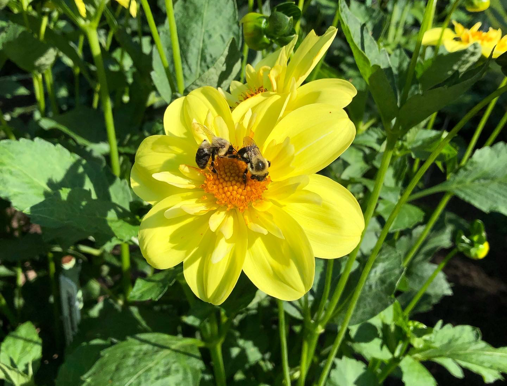
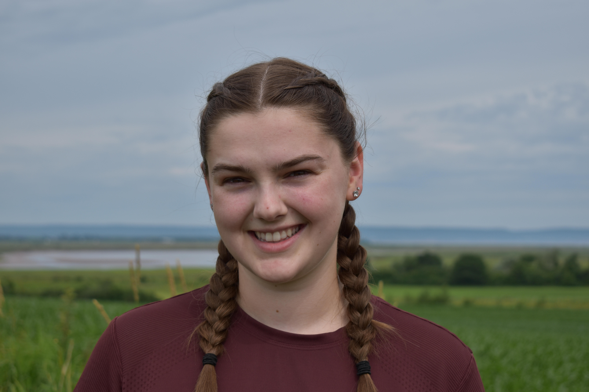

Lab culture
The Willick Lab fosters a supportive, diverse environment that prioritizes well-being and work-life balance. Committed to rigorous, ethical, and impactful research, we view asking for help and acknowledging mistakes as essential to growth. Above all, we cultivate curiosity and camaraderie through open debate, shared expertise, and mutual gratitude.
The team

Ian Willick
Research interests: Plant responses to environmental stress, cold acclimation, ice nucleation, and plant nutrition.
I (he/him) use manipulative experiments to understand how plants tolerate or avoid injury in current and future environments. While much of my work has focused on how plants respond to low temperatures, my long-term goal is to understand how warming and water stress interact to affect plant physiology and nutrient availability in cool climates. I also investigate how much stress a plant can endure—and for how long—before it becomes lethal. Examining both the drivers of mortality and what promotes recovery after sub-lethal stress. Answering these questions identifies critical thresholds to avoid and meaningful traits to target for crop improvement.______________________________________________________________________________________________________________________________________________________

Emma Adams
Emma (she/her) joined the lab in 2023 as a technician. Emma completed her M.Sc. with Dr. Laura Ferguson (Acadia University) characterizing how temperature influences the immune performance of adult and juvenile mosquitoes (Aedes spp., Culex spp.). Prior to that, Emma completed an honours thesis project under the co-supervision of Dr. Debra Moreau (AAFC Kentville) and Dr. Kirk Hillier (Acadia University) investigating the population dynamics and phenology of grape phylloxera (Daktulospharia vitifoliae). Outside of the lab, Emma enjoys volunteering with 4-H, gardening, and spending time with family.______________________________________________________________________________________________________________________________________________________

Riley Lemieux
Riley Lemieux (he/him) joined the lab in September 2025 as an M.Sc. student co-supervised by Dr. Zoë Migicovsky (Acadia University). Riley’s research focuses on how leaf wetness and the phyllosphere influences ice nucleation activity and freezing injury in grapevines. Previously, Riley graduated with a B.Sc. in Biology from Acadia University, where he studied in the Migicovsky Lab the influence of grafting on apple wood anatomy. Outside of the lab, Riley enjoys playing sports, hiking, and running.______________________________________________________________________________________________________________________________________________________
Aisling O'Neill
Aisling (she/they) is a fourth year undergraduate student double majoring in Biology and Chemistry at Acadia University. Aisling returned to the lab in May 2026 as an honours thesis student co-supervised by Dr. Glenys Gibson (Acadia Universty) studying how winter rye and spring barley respond to cold acclimation and cold shock. Aisling first joined the lab in January 2025 as a co-op student analyzing volatiles produced by Si-treated grapevines. She returned in 2026 for a second co-op placement. Outside of the lab, Aisling is a firefighter with the Wolfville Fire Department and enjoys running and drawing.______________________________________________________________________________________________________________________________________________________

Taylor Cahill
Taylor Cahill (she/her) re-joined the lab in September 2026 as a M.Sc. student co-supervised by Dr. Zoë Migicovsky . Taylor’s research focuses on the phenomics of seed traits as predictors for strawberry vigour. Previously, Taylor graduated with a B.Sc. in Biology from Acadia University, where she completed an honours thesis in the lab studying how silicon amendments enhance the tolerance of strawberry to drought. Outside of the lab, Taylor enjoys traveling and baking.
______________________________________________________________________________________________________________________________________________________
Former members
Olivia Guy
Olivia (she/her) is an undergraduate student at Acadia University majoring in Biology and minoring in Mathematics & Statistics. She joined the lab in May 2026 as a summer student. Previously, she completed a Research Skills placement with Dr. Zoë Migicovsky focusing on tissue culture and phenological assessments of digital Fragaria virginiana herbarium specimens. Outside the lab, Olivia can be found taking dance classes, attending music rehearsals, and doing needlework.______________________________________________________________________________________________________________________________________________________
Lisa Harkness: Technician (2026). Grape cluster sampling and processing.
Connor Smith: CO-OP Student (2026). Project: Honeycrisp juice quality analysis.
Grace Hennebery-McNeil: Summer student (2023 & 2024), Technician (2025). Grape cluster juicer and analyzer extrodinarre!
Hope Mailman: Summer student (2025).
Mike Jordan: Technician (2024-2025). Fruit quality and chemical analysis of volatiles.
Erin Frankland: Summer student (2023 & 2024). Research topics student (2024-2025). Project: Using infrared thermography to detect apple maggot in Honeycrisp apples. Co-supervised by Suzie Blatt (AAFC) and Laura Ferguson (Acadia University).
Rachel Turner: Summer student (2024).
Natalie Sheiring: Summer student (2022).